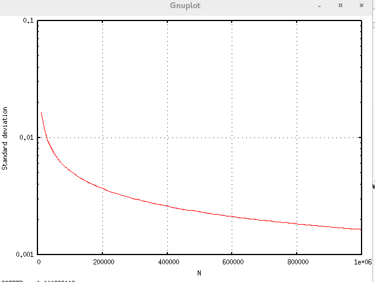

6. モンテカルロ法で円周率を求める¶
モンテカルロ法で円周率を求める時、周囲の正方形と内部の円の面積比はどうとるのがよいだろうか。考えてみよう。 つまり、次の図中にランダムに点を打って点の数を数えて円周率を求める場合にどういう風に正方形の大きさを設定すれば良いか考える。

円の半径を\(r\)、正方形の一辺の長さを\(R\)とする。ただし
\[R \geq r\]
とする。このとき円の中に点が打たれる確率は
\[p_0 = \frac{\pi r^2}{4R^2}\]
で与えられる。\(N\)点打って\(n\)点が円の中に入る確率は
\[{}_NC_np_0^n(1-p_0)^{N-n}\]
で与えられる。これは二項分布なので平均、分散はそれぞれ\(Np_0,\;Np_0(1-p_0)\)で与えられる。標準偏差を誤差として採用すれば\(N\)点打った場合に円の中に入っている点の数は
\[Np_0 \pm \sqrt{Np_0(1-p_0)}\]
と評価できる。これを\(N\)で割れば\(p_0\)の推定値\(\tilde p_0\)が得られ、
\[\tilde p_0 = p_0 \pm \sqrt{\frac{p_0(1-p_0)}{N}}\]
となる。推定した\(p_0\)に\(\frac{4R^2}{r^2}\)を乗じれば\(\pi\)の推定値\(\tilde\pi\)が得られ、
\[\tilde\pi = p_0\frac{4R^2}{r^2} \pm \sqrt{\frac{p_0(1-p_0)}{N}}\frac{4R^2}{r^2}\]
\(\frac{4R^2}{r^2}=\frac{\pi}{p_0}\)を代入すれば
\[\tilde \pi = \pi \pm \pi\sqrt{\frac{1-p_0}{Np_0}}\]
誤差項は\(p_0\)に関して短調減少関数である。\(p_0 \leq \frac{\pi}{4}\)であるから\(p_0=\frac{\pi}{4}\)のときが最も推定誤差は小さくなる。このとき
\[R = r\]
である。おおう、つまんねえ。ちなみに標準偏差プロットすると次のグラフのようになる。
100万点打ってもまだ3.14あたりをうろうろしとる。